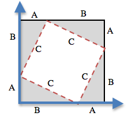

Students return to the Pythagorean Theorem and distance formula they used in Bootstrap 1, this time with data structures and the full update-world function.
Students will use different Cond branches to identify collisions in their games
Standards and Evidence Statements:
Standards with prefix BS are specific to Bootstrap; others are from the Common Core. Mouse over each standard to see its corresponding evidence statements. Our Standards Document shows which units cover each standard.
Length: 90 minutes
Glossary:
hypoteneuse
Materials:
Pens/pencils for the students, fresh whiteboard markers for teachers
Class poster (List of rules, design recipe, course calendar)
Editing environment (WeScheme or DrRacket with the bootstrap-teachpack installed)
Student workbooks
Language Table
Cutouts of Cat and Dog images
Cutouts of Pythagorean Theorem packets [1, 2] - 1 per cluster
The Ninja World 5 file [NW5.rkt from source-files.zip | WeScheme preloaded on students’ machines
Preparation:
Seating arrangements: ideally clusters of desks/tables
Types
Functions
Number
+ - * / sq sqrt expt
String
string-append string-length
Image
rectangle circle triangle ellipse radial-star scale rotate put-image
Boolean
= > < string=? and or
Introduction
Overview
Learning Objectives
Evidence Statements
Product Outcomes
Materials
Pens/pencils for the students, fresh whiteboard markers for teachers
Class poster (List of rules, design recipe, course calendar)
Editing environment (WeScheme or DrRacket with the bootstrap-teachpack installed)
Student workbooks
Language Table
Cutouts of Cat and Dog images
Cutouts of Pythagorean Theorem packets [1, 2] - 1 per cluster
The Ninja World 5 file [NW5.rkt from source-files.zip | WeScheme preloaded on students’ machines
Preparation
Seating arrangements: ideally clusters of desks/tables
Introduction
(Time 5 minutes)
Right now, in both Ninja World and your games, nothing happens when the player collides with another
game character. We need to write a function change that. This is going to require a
little math, but luckily it’s exactly the same as it was in Bootstrap:1.
In the image above, how far apart are the cat and dog?
If the cat was moved one space to the right, how far apart would they be?
What if the cat and dog switched positions?
In one dimension, such as on a number line, finding the distance is pretty easy. If the characters
are on the same line, you just subtract one coordinate from another, and you have your distance.
However, if all we did was subtract the second number from the first, the function would only
work half the time!
When the cat and dog were switched, did you still subtract the dog’s position from the
cat’s, or subtract the cat’s position from the dog’s? Why?
Draw the number line on the board, with the cutouts of the cat and dog at the given positions.
Ask students to tell you the distance between them, and move the images accordingly.
Having students act this out can also work well: draw a number line, have two students stand at different
points on the line, using their arms or cutouts to give objects of different sizes. Move students along
the number line until they touch, then compute the distance on the number line.
1D Distance
Overview
Learning Objectives
Evidence Statements
Product Outcomes
Materials
Preparation
1D Distance
(Time 10 minutes)
Distances cannot be negative, so we have to make sure we are always subtracting the smaller
number from the bigger one. If the characters are on the same plane, there are two conditions:
if the first number is bigger, and the other is if the second is bigger.
What kind of function do we need, when we have multiple
conditions?
Write two examples for line-length so that it subtracts the
smaller number from the bigger one. Start with an example using
the numbers 23 and 5, then do a second example with 5 and 23 in
the other order.
Now we have an idea of the results for the cond statement, but a cond function also
needs Tests. We want to test to see whether the first
number given to line-length is greater than the second number.
How would you write that test in Racket code?
And what would the result for that test be? If a is
greater than b, which number would we subtract from
which?
How could you include a test for wheather the two numbers are equal,
without adding a third cond branch?
Write down the definition for line-length.
It is possible to replace the second test with else, because there will only be two options:
line-length will either subtract b from a, or a from b. (If the
numbers are equal, it doesn’t matter which is subtracted.) However, having students write out the full
test and result gets them thinking about what exactly is being tested in each branch of the function.
It is possible to avoid using a conditional entirely by taking the absolute value of the difference
(the function abs does this); if you are working with older students who already know about
absolute value you could show it. Using cond, however, emphasizes how code structure arises
from examples.
The Distance Formula
Overview
Learning Objectives
Reinforce their understanding of the distance formula
Evidence Statements
Product Outcomes
Students will write the distance function
Materials
Preparation
The Distance Formula
(Time 20 minutes)
Unfortunately you don’t have any code to calculate the distance in two dimensions.
All you have so far is something that tells you the length in only the x- or y-dimension.
How could you find the distance between the two points shown
in this image?
How could you find the length of the dotted line, also
called the Hypoteneuse?
Let’s start with what we do know: the dotted line sort of makes a triangle, and we can
find out the length of the other two sides, labeled "A," "B" and "C."
What is the line-length of A?
To make your life easier, you can use the function you already wrote: line-length.
In this example, (line-length A) is 4 and (line-length B) is 3, but we still don’t know C.
Ancient civilizations had the same problem: they also struggled to find the distance
between points in two dimensions. Let’s work through a way to think about this problem:
what expression computes the length of the hypoteneuse of a right triangle?
Pass out Pythagorean Proof materials [1,
2] to each group, and have them
review all of their materials:
A large, white square with a smaller one drawn inside
Four gray triangles, all the same size
Everyone will have a packet with the same materials, but each group’s triangles are
a little different. The activity workes with triangles of all sizes, so each pair will
get to test it out on their own triangles.
For any right triangle, it is possible to draw a picture
where the hypoteneuse is used for all four sides of a square. In the diagram shown
here, the white square is surrounded by four gray, identical right-triangles, each
with sides A and B. The square itself has four identical sides of length C, which
are the hypoteneuses for the triangles. If the area of a square is expressed by
, then the area of the white space is .
Have students place their gray triangles onto the paper, to match the diagram.
By moving the gray triangles, it is possible
to create two rectangles that fit inside the original square. While the space
taken up by the triangles has shifted, it hasn’t gotten any bigger or smaller.
Likewise, the white space has been broken into two smaller squares, but in total
it remains the same size. By using the side-lengths A and B, one can calculate
the area of the two squares.
What is the area of the smaller square? The larger square?
You may need to explicitly point out that the side-lengths of the triangles can be
used as the side-lengths of the squares.
The smaller square has an area of , and the
larger square has an area of . Since these squares are just the original
square broken up into two pieces, we know that the sum of these areas must be equal
to the area of the original square:
Does the same equation work for any values of A and B?
To get C by itself, we take the square-root of the sum of the areas:
Pythagoras proved that you can get the square of the hypotenuse by adding the squares
of the other two sides. In your game, you’re going to use the horizontal and vertical
distance between two characters as the two sides of your triangle, and use the
Pythagorean theorem to find the length of that third side.
Remind students that A and B are the horizontal and vertical lengths, which are
calculated by line-length.
Turn to Page 37
of your workbook - you’ll see the formula written out.
Draw out the circle of evaluation, starting with the
simplest expression you can see first.
Once you have the circle of evaluation, translate it
into racket code at the bottom of the page, starting
with (EXAMPLE (distance 4 2 0 5) ...)
Now you’ve got code that tells you the distance between the points (4, 2) and (0, 5).
But we want to have it work for any two points. It would be great if we had a
function that would just take the x’s and y’s as input, and do the math for us.
Turn to Page 38,
and read the problem statement and function header
carefully.
Use the Design Recipe to write your distance function.
Feel free to use the work from the previous page as your
first example, and then come up with a new one of your own.
When finished, type your line-length and
distance functions into your game, and see what happens.
Does anything happen when things run into each other?
You still need a function to check whether or not two things are colliding.
Pay careful attention to the order in which the coordinates are given to the
distance function. The player’s x-coordinate (px) must be given first,
followed by the player’s y (py), character’s x (cx), and character’s y
(cy). Inside the body of the function, line-length can only calculate
lengths on the same axis ((line-length px cx) and (line-length cx cy)).
Just like with making data structures, order matters, and the distance function will
not work otherwise. Also be sure to check that students are using sq and
sqrt in the correct places.
Collide?
Overview
Learning Objectives
Evidence Statements
Product Outcomes
Students will write the collide? function
Materials
Preparation
Collide?
(Time 10 minutes)
So what do we want to do with this distance?
How close should your danger and your player be, before they hit
each other?
At the top of Page 39 you’ll find the
Word Problem for collide?.
Fill in the Contract, two EXAMPLES, and then write the
code. Remember: you WILL need to make use of the
distance function you just wrote!
When you’re done, type it into your game, under
collide?.
Using visual examples, ask students to guess the distance between a danger
and a player at different positions. How far apart do they need to be before
one has hit the other?
update-world
Overview
Learning Objectives
Identify collision as yet another sub-domain which requires different behavior of the update-world function
Evidence Statements
Product Outcomes
Students will use different Cond branches to identify collisions in their games
Materials
Preparation
update-world
(Time 40 minutes)
Now that you have a function which will check whether something is colliding,
you can go back to modifying Ninja World.
Out of the four major functions in the game (update-world,
draw-world, keypress, and big-bang), which
do you think you’ll need to edit to handle collisions?
We’ll need to make some more branches for cond in update-world.
What should happen when the cat collides with the dog? We want to put the dog
offscreen, so that he can come back to attack again.
Start with the test: how could you check whether the
cat and dog are colliding? Have you written a function
to check that?
What do the inputs need to be?
How do you get the catY out of the world?
What about the Cat’s x-coordinate? She’s always in the
center of the screen, so what will her x-coordinate
always be?
How do you get the dogX out of the world?
Is there a dogY in the world? Where in the
game can you look to get that number? (Hint: in which
function do you draw the images on the game
screen?)
Remember that update-world gives back a world, so what function should come first in our result?
And what should happen when the cat and dog collide? Can you think of a
number that puts the dog off the screen on the left side?
Does the rubyX change when the dog and cat collide? How about
catY? How do you get each of those things out of the world?
Collision detection must be part of the update-world function because the
game should be checking for a collision every time the world is updated. Students may
assume that draw-world should handle collision detection, but point out that the
Range of draw-world is an Image, and their function must return a new world in order to
set the locations of the characters after a collision.
Now it’s time to handle collisions in your game...
Turn to Page 40 and write
some more tests and results. What characters in your game could collide
with each other? What should happen as a result? When you have written
each test and result down, type it into your game.
Work in small groups to complete collision branches.
Closing
Overview
Learning Objectives
Evidence Statements
Product Outcomes
Materials
Preparation
Closing
(Time 5 minutes)
Congratulations! You’ve finished every lesson, and now it’s up to you to make your
game even better. Take some time to brainstorm...what else do you want your game to
do? Next unit you can add even more things, so that your games are even cooler.


 By moving the gray triangles, it is possible
to create two rectangles that fit inside the original square. While the space
taken up by the triangles has shifted, it hasn’t gotten any bigger or smaller.
Likewise, the white space has been broken into two smaller squares, but in total
it remains the same size. By using the side-lengths A and B, one can calculate
the area of the two squares.
By moving the gray triangles, it is possible
to create two rectangles that fit inside the original square. While the space
taken up by the triangles has shifted, it hasn’t gotten any bigger or smaller.
Likewise, the white space has been broken into two smaller squares, but in total
it remains the same size. By using the side-lengths A and B, one can calculate
the area of the two squares.
 The smaller square has an area of , and the
larger square has an area of . Since these squares are just the original
square broken up into two pieces, we know that the sum of these areas must be equal
to the area of the original square:
The smaller square has an area of , and the
larger square has an area of . Since these squares are just the original
square broken up into two pieces, we know that the sum of these areas must be equal
to the area of the original square:
{kind=link}
{kind=link}